library(ggplot2)
library(WDI)
library(dplyr)
Attaching package: 'dplyr'The following objects are masked from 'package:stats':
filter, lagThe following objects are masked from 'package:base':
intersect, setdiff, setequal, unionlibrary(ggplot2)
library(WDI)
library(dplyr)
Attaching package: 'dplyr'The following objects are masked from 'package:stats':
filter, lagThe following objects are masked from 'package:base':
intersect, setdiff, setequal, uniondf = WDI(
country = "all",
indicator = c(
pib_capita = "NY.GDP.PCAP.CD",
esp_vida = "SP.DYN.LE00.IN",
poblacion = "SP.POP.TOTL"
),
start = 2014,
end = 2024,
extra = T
)df_22 = df %>%
filter(region != "Aggregates", year == 2022) %>%
select(-year)df_22 %>%
head() country iso2c iso3c status lastupdated pib_capita esp_vida poblacion
1 Afghanistan AF AFG 2025-07-01 357.2612 65.617 40578842
2 Albania AL ALB 2025-07-01 6846.4267 78.769 2777689
3 Algeria DZ DZA 2025-07-01 4961.5526 76.129 45477389
4 American Samoa AS ASM 2025-07-01 18017.4589 72.752 48342
5 Andorra AD AND 2025-07-01 42414.0590 84.016 79705
6 Angola AO AGO 2025-07-01 2929.6945 64.246 35635029
region capital longitude latitude
1 South Asia Kabul 69.1761 34.5228
2 Europe & Central Asia Tirane 19.8172 41.3317
3 Middle East & North Africa Algiers 3.05097 36.7397
4 East Asia & Pacific Pago Pago -170.691 -14.2846
5 Europe & Central Asia Andorra la Vella 1.5218 42.5075
6 Sub-Saharan Africa Luanda 13.242 -8.81155
income lending
1 Low income IDA
2 Upper middle income IBRD
3 Upper middle income IBRD
4 High income Not classified
5 High income Not classified
6 Lower middle income IBRDggplot(df_22)
ggplot(df_22, aes(x = pib_capita, y = esp_vida))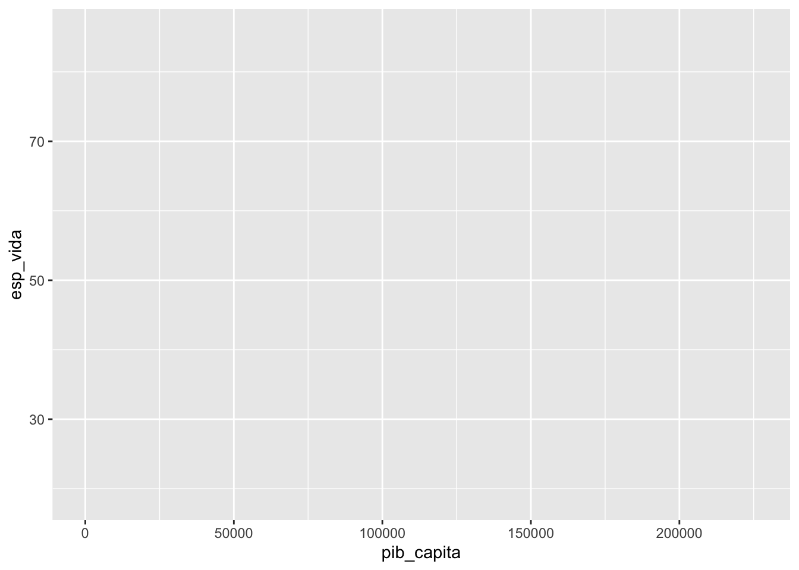
ggplot(df_22, aes(x = pib_capita, y = esp_vida)) +
geom_point()Warning: Removed 8 rows containing missing values or values outside the scale range
(`geom_point()`).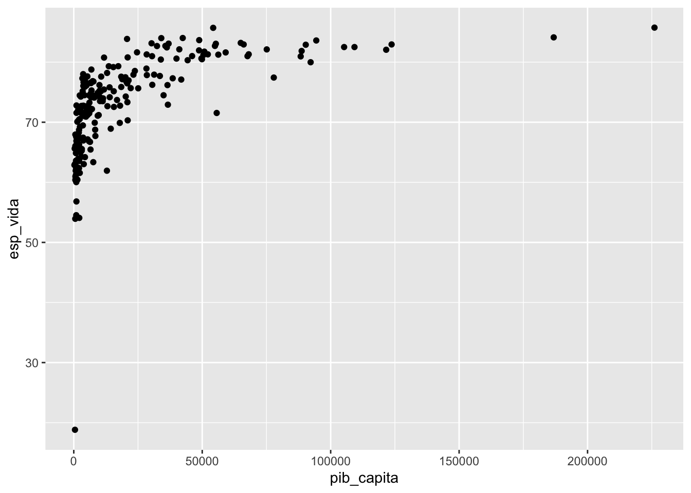
ggplot(df_22, aes(x = pib_capita, y = esp_vida)) +
geom_point() +
scale_x_log10()Warning: Removed 8 rows containing missing values or values outside the scale range
(`geom_point()`).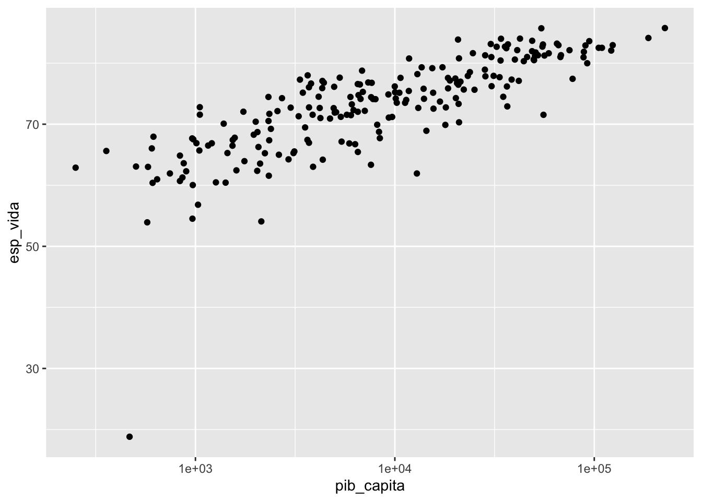
ggplot(df_22, aes(x = pib_capita, y = esp_vida)) +
geom_point(color = "#32CD32", size = 1.5, alpha = 0.9) +
scale_x_log10()Warning: Removed 8 rows containing missing values or values outside the scale range
(`geom_point()`).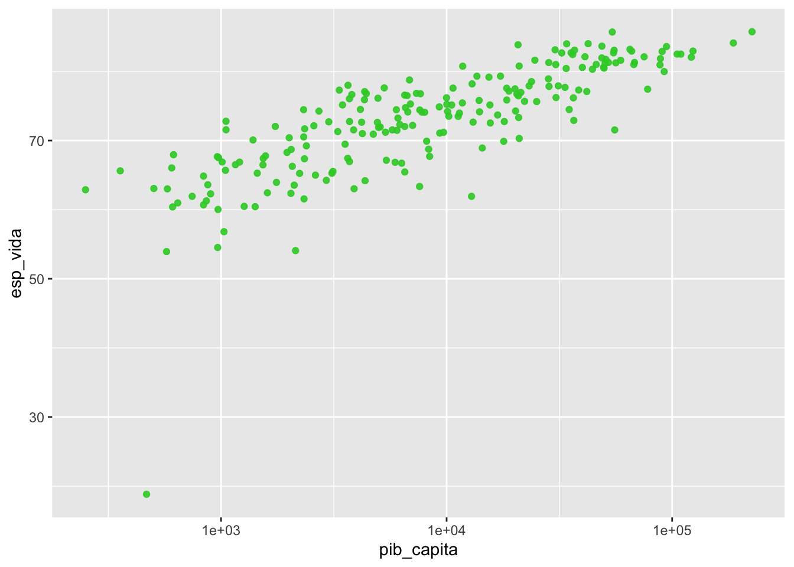
ggplot(df_22, aes(x = pib_capita, y = esp_vida, color = region)) +
geom_point(size = 1.5, alpha = 0.9) +
scale_x_log10()Warning: Removed 8 rows containing missing values or values outside the scale range
(`geom_point()`).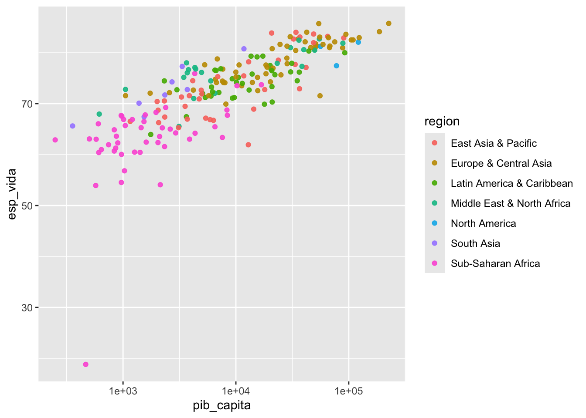
ggplot(df_22, aes(x = pib_capita, y = esp_vida, color = region)) +
geom_point(size = 1.5, alpha = 0.9) +
scale_x_log10() +
labs(
title = "Relación entre PBI y la esperanza de vida",
x = "PBI per cápita (log10)",
y = "Esperanza de vida",
color = "Región"
)Warning: Removed 8 rows containing missing values or values outside the scale range
(`geom_point()`).ggplot(df_22, aes(x = pib_capita, y = esp_vida, color = region)) +
geom_point(size = 1.5, alpha = 0.9) +
scale_x_log10() +
labs(
title = "Relación entre PBI y la esperanza de vida",
x = "PBI per cápita (log10)",
y = "Esperanza de vida",
color = "Región"
) +
facet_wrap(~region) +
theme(legend.position = "none")Warning: Removed 8 rows containing missing values or values outside the scale range
(`geom_point()`).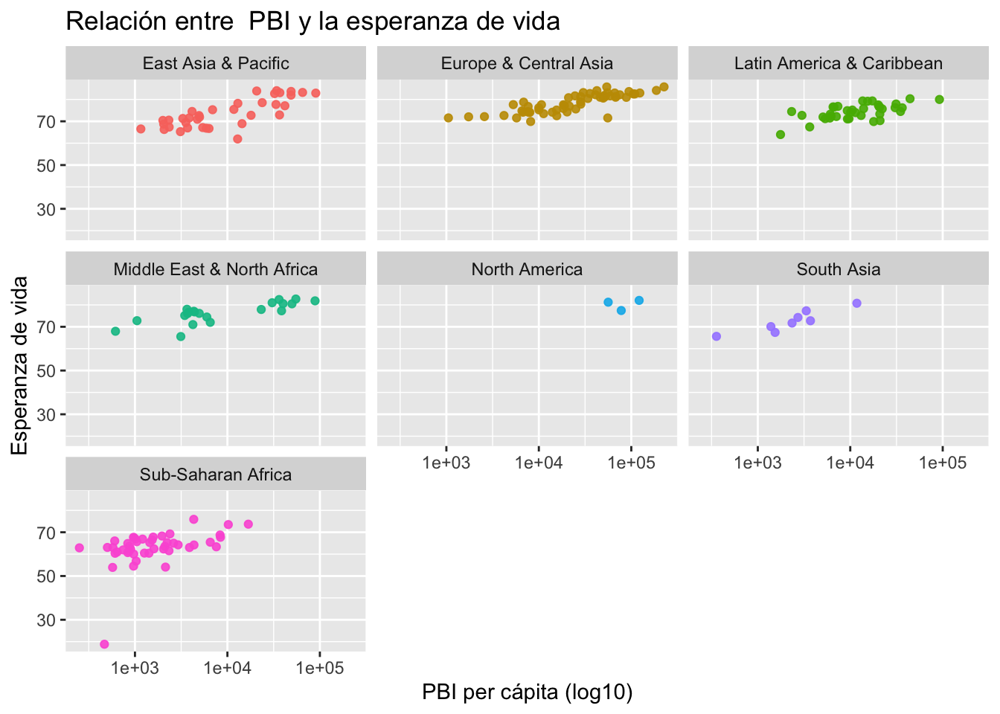
grafico = ggplot(df_22, aes(x = pib_capita, y = esp_vida, color = region)) +
geom_point(size = 1.5, alpha = 0.9) +
scale_x_log10() +
labs(
title = "Relación entre PBI y la esperanza de vida",
x = "PBI per cápita",
y = "Esperanza de vida",
color = "Región"
) graficoWarning: Removed 8 rows containing missing values or values outside the scale range
(`geom_point()`).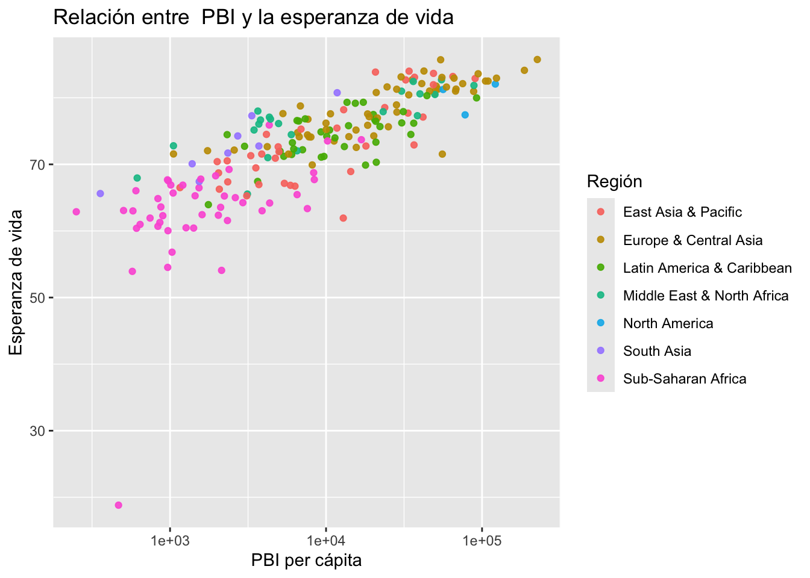
grafico +
theme_minimal()Warning: Removed 8 rows containing missing values or values outside the scale range
(`geom_point()`).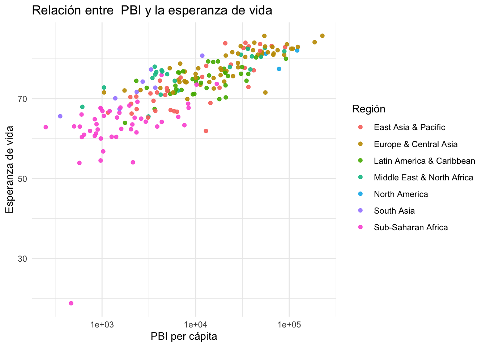
grafico +
theme_bw()Warning: Removed 8 rows containing missing values or values outside the scale range
(`geom_point()`).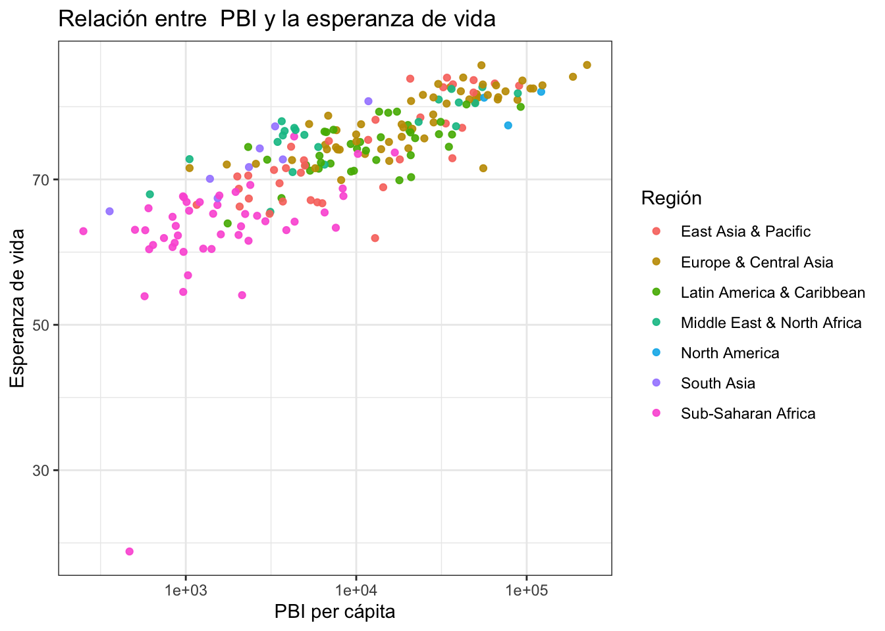
library(ggthemes)grafico +
theme_economist()Warning: Removed 8 rows containing missing values or values outside the scale range
(`geom_point()`).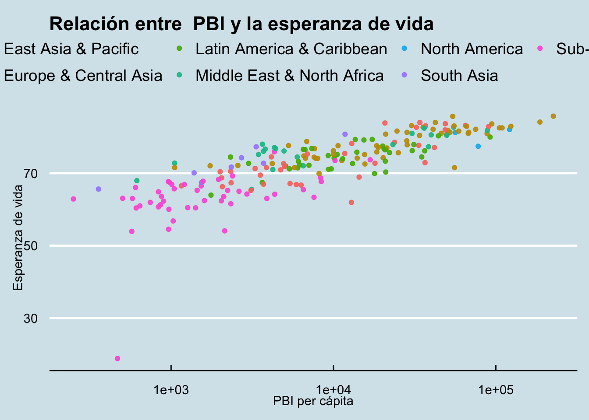
df_22 %>%
arrange(esp_vida) %>%
head() country iso2c iso3c status lastupdated pib_capita esp_vida
1 Central African Republic CF CAF 2025-07-01 467.3598 18.818
2 Somalia SO SOM 2025-07-01 573.1281 53.931
3 Nigeria NG NGA 2025-07-01 2139.3748 54.079
4 Chad TD TCD 2025-07-01 966.0365 54.528
5 Lesotho LS LSO 2025-07-01 1030.1258 56.812
6 South Sudan SS SSD 2025-07-01 NA 57.203
poblacion region capital longitude latitude income
1 5098039 Sub-Saharan Africa Bangui 21.6407 5.63056 Low income
2 17801897 Sub-Saharan Africa Mogadishu 45.3254 2.07515 Low income
3 223150896 Sub-Saharan Africa Abuja 7.48906 9.05804 Lower middle income
4 18455316 Sub-Saharan Africa N'Djamena 15.0445 12.1048 Low income
5 2286110 Sub-Saharan Africa Maseru 27.7167 -29.5208 Lower middle income
6 11021177 Sub-Saharan Africa Juba 31.6 4.85 Low income
lending
1 IDA
2 IDA
3 Blend
4 IDA
5 IDA
6 IDAggplot(df_22, aes(x = esp_vida)) +
geom_histogram(binwidth = 3, fill = "skyblue", color = "black") +
labs(title = "Distribución de la esperanza de vida",
x = "Esperanza de vida",
y = "Frecuencia") +
theme_minimal()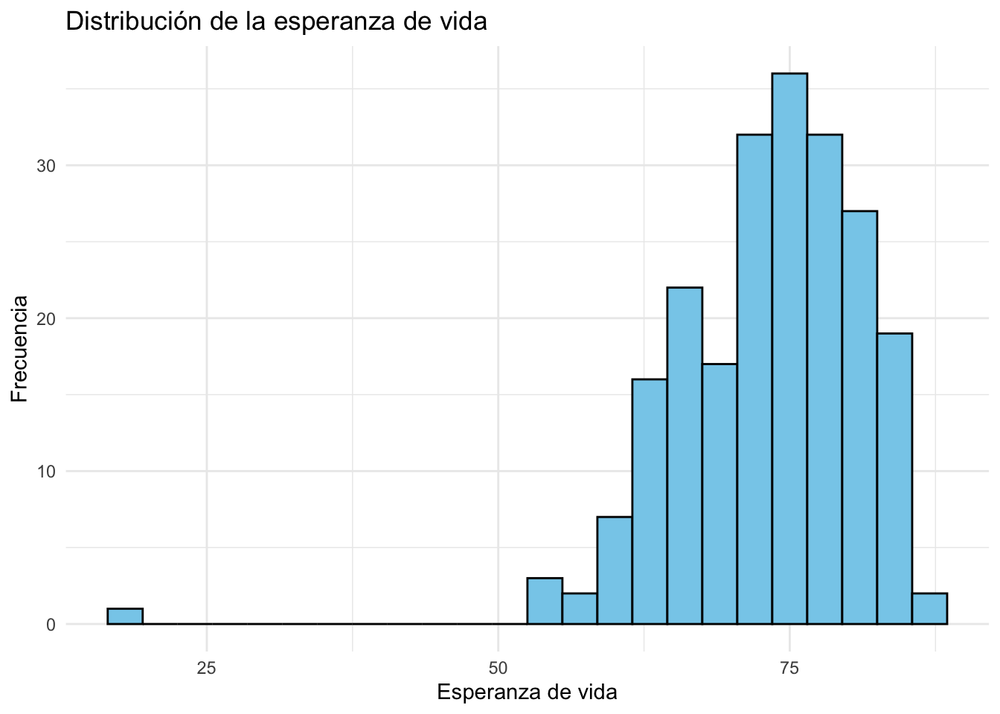
df %>%
filter(region != "Aggregates") %>%
group_by(year, region) %>%
reframe(esp_vida_media = mean(esp_vida, na.rm = TRUE)) %>%
ggplot(aes(x = year, y = esp_vida_media, color = region)) +
geom_line(size = 1) +
labs(title = "Evolución de la esperanza de vida por región",
x = "Año",
y = "Esperanza de vida (promedio)",
color = "Región") +
theme_minimal() +
theme(legend.position = "top")Warning: Using `size` aesthetic for lines was deprecated in ggplot2 3.4.0.
ℹ Please use `linewidth` instead.Warning: Removed 7 rows containing missing values or values outside the scale range
(`geom_line()`).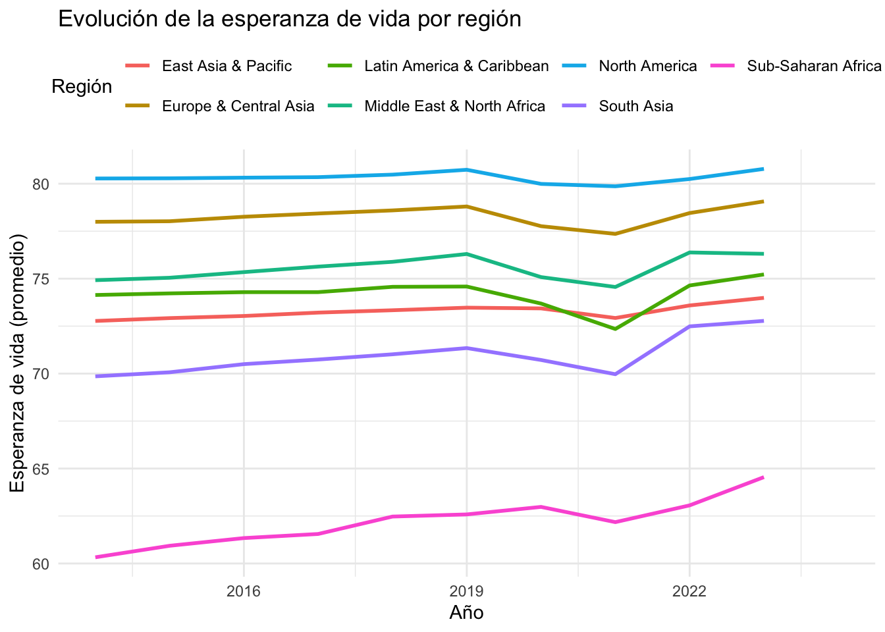
df_22 %>%
ggplot(aes(x = region, y = esp_vida, fill = region)) +
geom_boxplot() +
labs(title = "Distribución de la esperanza de vida por región",
x = "Región",
y = "Esperanza de vida") +
theme_minimal() +
theme(legend.position = "none")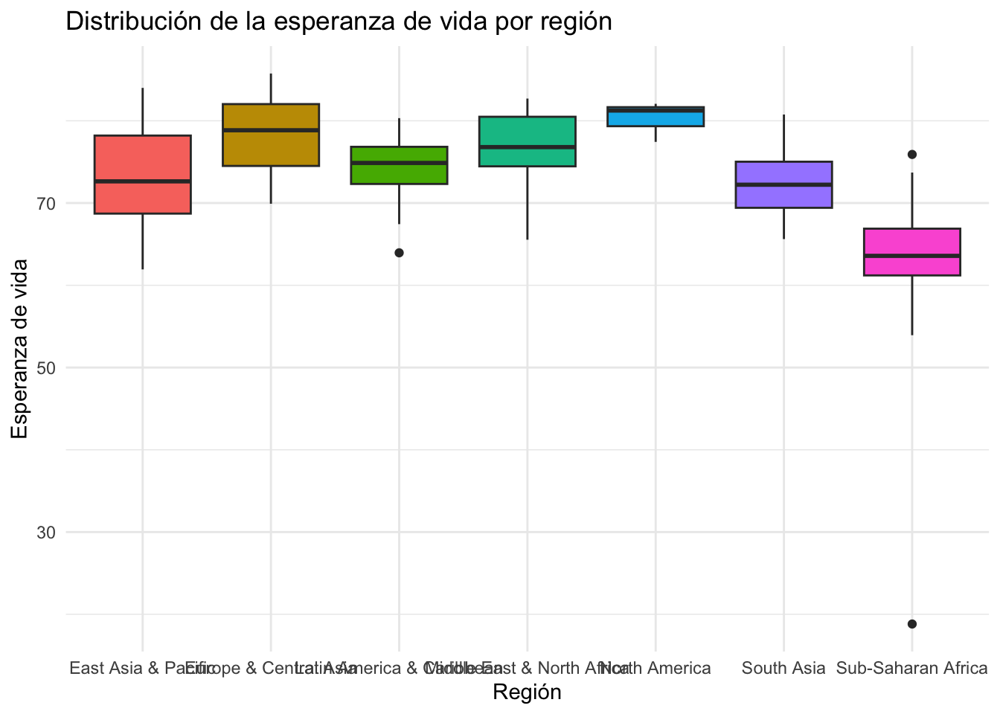
df_22 %>%
ggplot(aes(x = region, fill = region)) +
geom_bar() +
labs(
title = "Frecuencia de observaciones por región",
x = "Región",
y = "Frecuencia"
) +
theme_minimal() +
theme(legend.position = "none") +
coord_flip()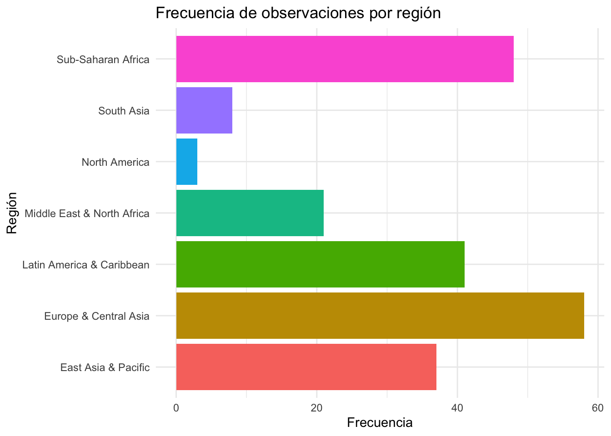
df_22 %>%
group_by(region) %>%
reframe(vida_media = mean(esp_vida, na.rm = TRUE)) %>%
ggplot(aes(x = reorder(region, vida_media),
y = vida_media, fill = region)) +
geom_col() +
labs(title = "Esperanza de vida promedio en 2022",
x = "Región",
y = "Esperanza de vida") +
theme_minimal() +
theme(legend.position = "none") +
coord_flip()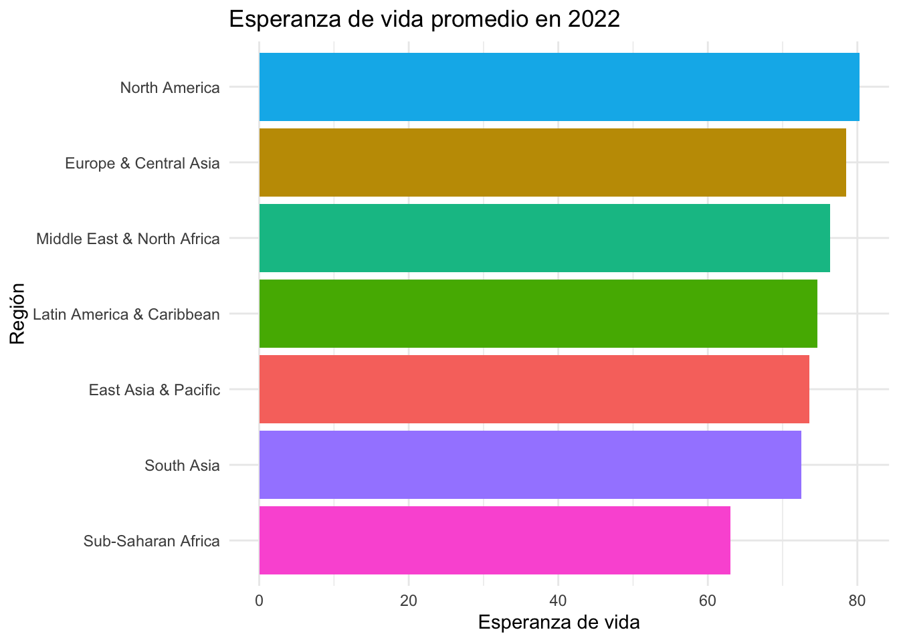
df_22 %>%
ggplot(aes(x = region, fill = income)) +
geom_bar(position = "fill") +
labs(title = "Distribución proporcional de ingresos por región",
x = "Región",
y = "Proporción",
fill = "Tipo de ingreso") +
theme_minimal() +
scale_y_continuous(labels = scales::percent)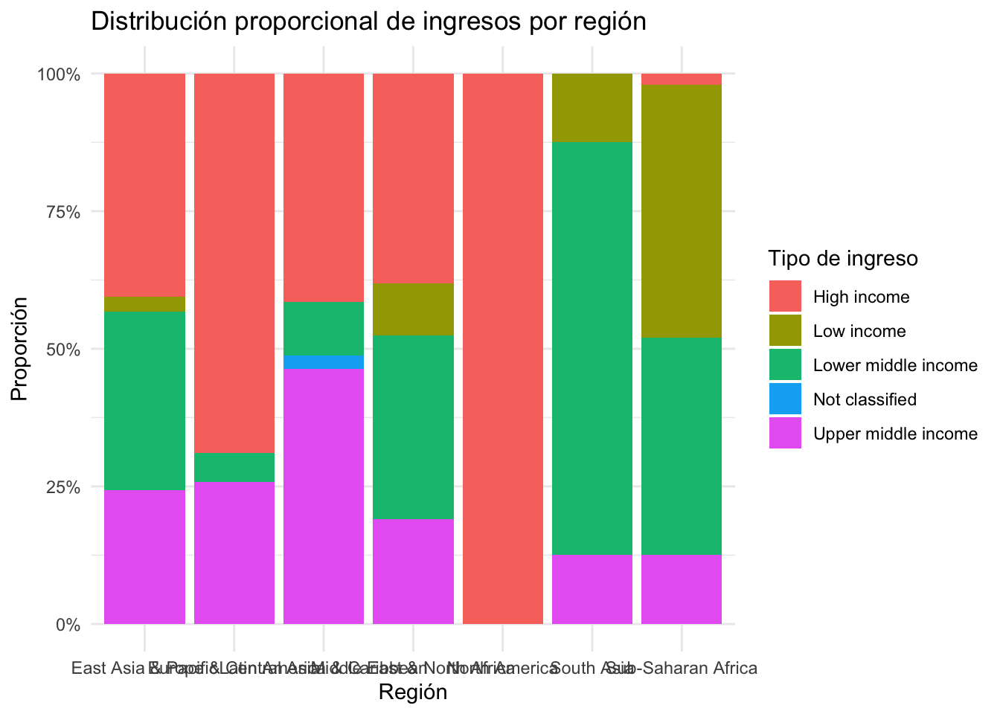
str(df_22$income) chr [1:216] "Low income" "Upper middle income" "Upper middle income" ...library(forcats)df_22 = df_22 %>%
filter(income != "Not classified") %>%
mutate(income = fct_relevel(income,
"Low income",
"Lower middle income",
"Upper middle income",
"High income"))str(df_22$income) Factor w/ 4 levels "Low income","Lower middle income",..: 1 3 3 4 4 2 4 3 3 4 ...df_22 %>%
ggplot(aes(x = region, fill = income)) +
geom_bar(position = "fill") +
labs(title = "Distribución proporcional de ingresos por región",
x = "Región",
y = "Proporción",
fill = "Tipo de ingreso") +
theme_minimal() +
scale_y_continuous(labels = scales::percent)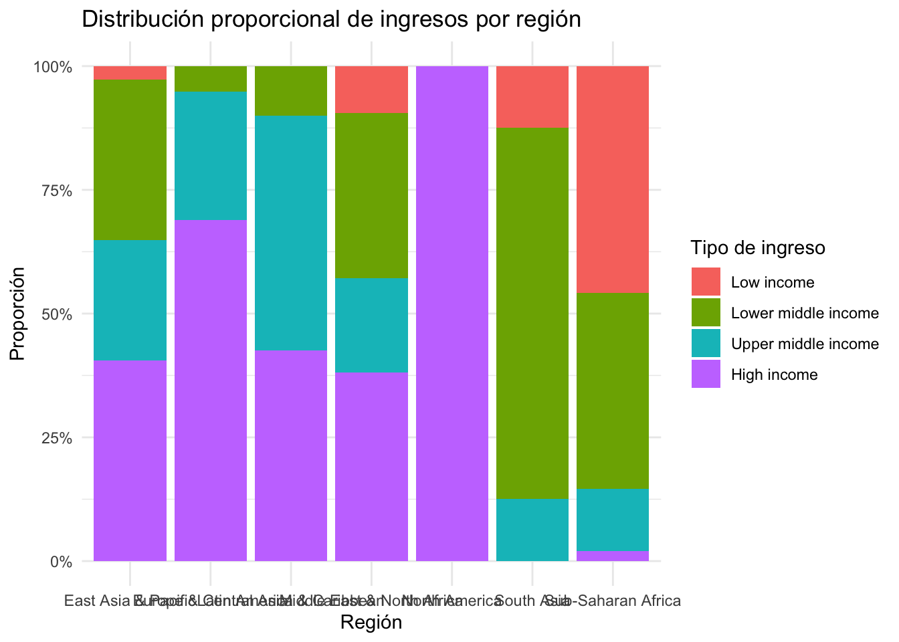
df_22 %>%
ggplot(aes(x = income, y = esp_vida, fill = income)) +
geom_boxplot() +
labs(title = "Distribución de la esperanza de vida por tipo de ingreso",
x = "Tipo de ingreso",
y = "Esperanza de vida") +
theme_minimal() +
theme(legend.position = "none")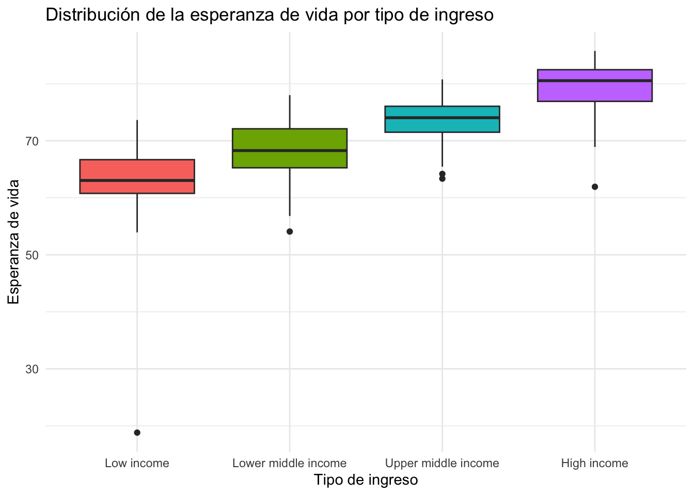
df_22 %>%
ggplot(aes(x = income, y = esp_vida, fill = income)) +
geom_violin(trim = FALSE, alpha = 0.9) +
labs(title = "Distribución de la esperanza de vida por tipo de ingreso",
x = "Tipo de ingreso",
y = "Esperanza de vida") +
theme_minimal() +
theme(legend.position = "none")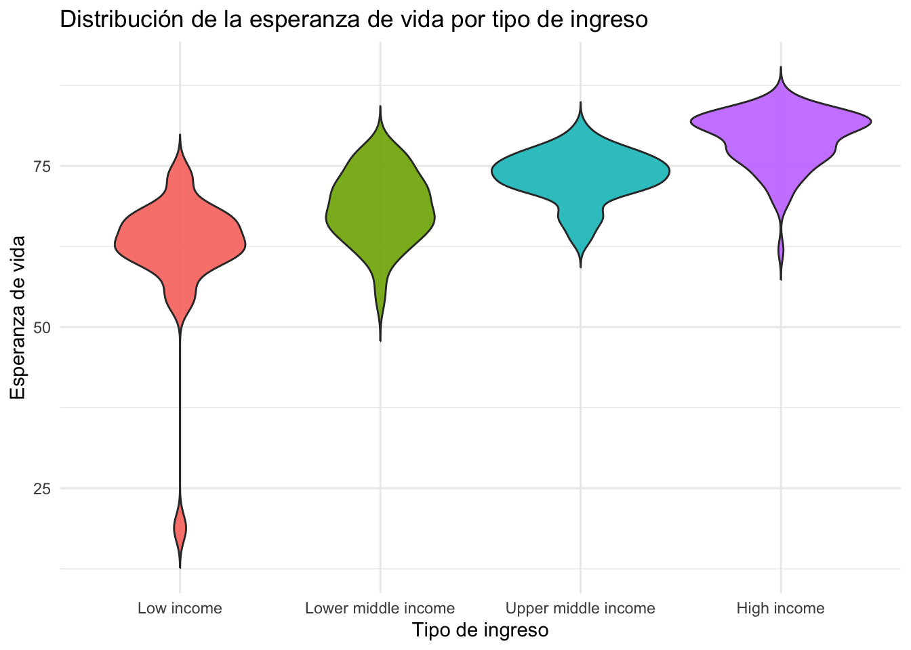
ggplot(df_22, aes(x = pib_capita, y = esp_vida)) +
geom_point(alpha = 0.6) +
scale_x_log10() +
labs(x = "PIB per cápita (log10)", y = "Esperanza de vida") +
theme_minimal()Warning: Removed 7 rows containing missing values or values outside the scale range
(`geom_point()`).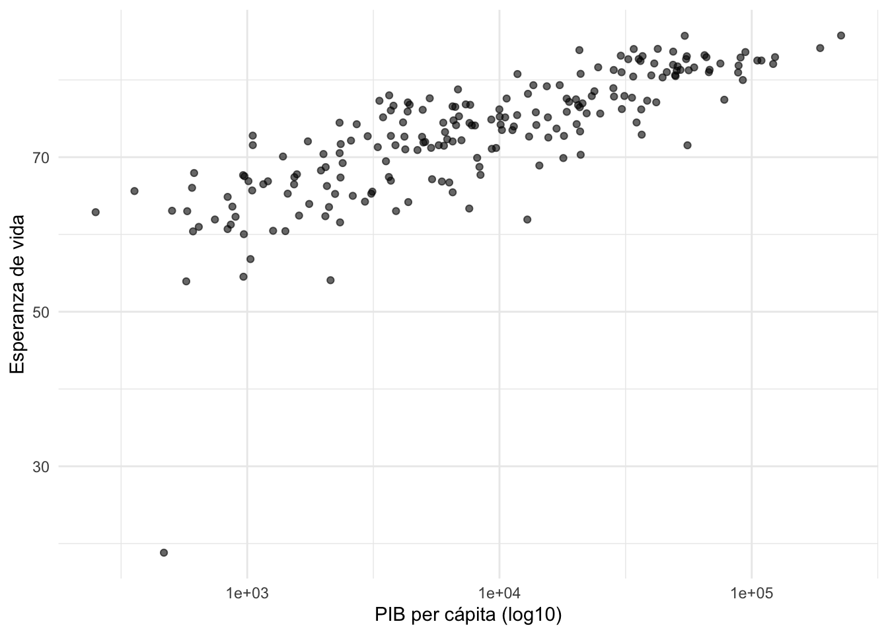
ggplot(df_22, aes(x = pib_capita, y = esp_vida)) +
geom_point(alpha = 0.6) +
scale_x_log10() +
geom_smooth(method = "lm", se = FALSE, color = "red") +
labs(x = "PIB per cápita (log10)", y = "Esperanza de vida") +
theme_minimal()`geom_smooth()` using formula = 'y ~ x'Warning: Removed 7 rows containing non-finite outside the scale range
(`stat_smooth()`).Warning: Removed 7 rows containing missing values or values outside the scale range
(`geom_point()`).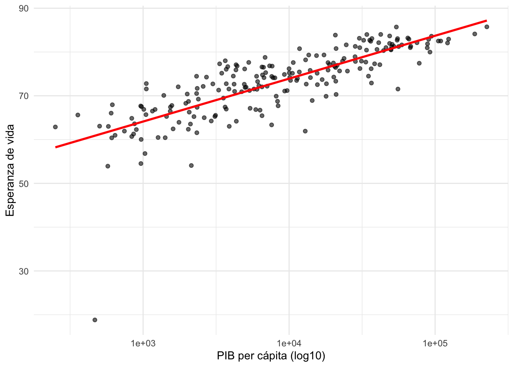
ggplot(df_22, aes(x = income, fill = region)) +
geom_bar(position = "fill") +
labs(x = "Nivel de ingreso", y = "Proporción", fill = "Región") +
theme_minimal()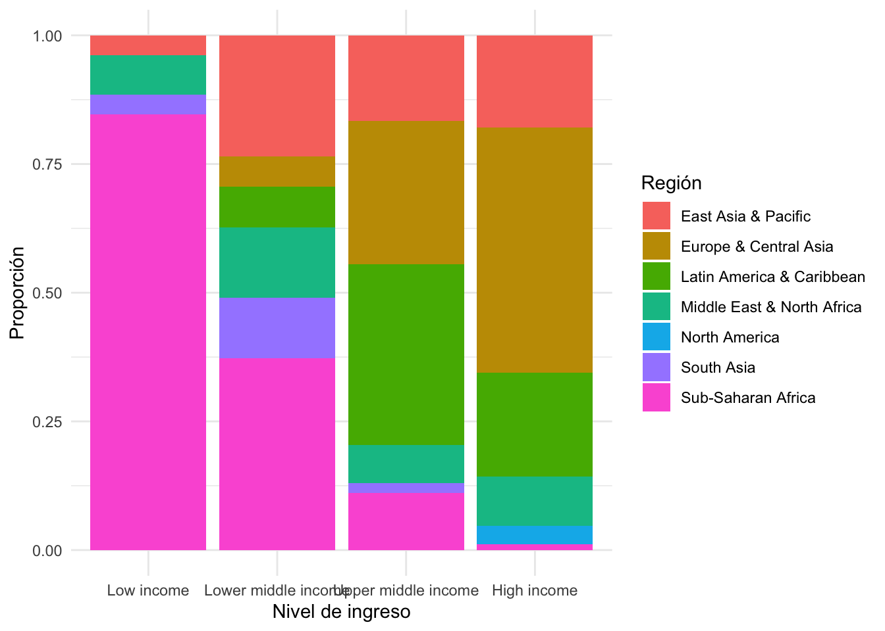
library(ggsci)ggplot(df_22, aes(x = region, y = esp_vida, fill = region)) +
geom_boxplot() +
scale_fill_nejm() +
theme_minimal() +
labs(title = "Boxplot por región con paleta NEJM") +
theme(legend.position = "none")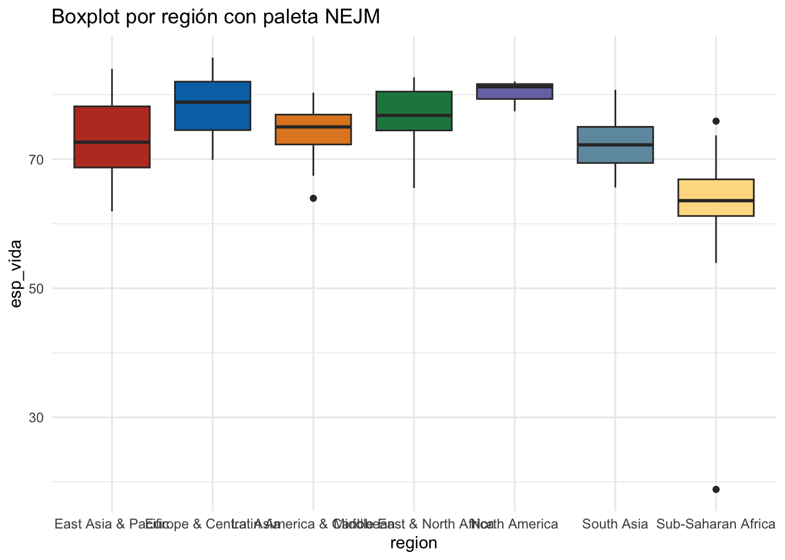
ggplot(df_22, aes(x = region, y = esp_vida, fill = region)) +
geom_boxplot() +
scale_fill_lancet() +
theme_minimal() +
labs(title = "Boxplot por región con paleta Lacet") +
theme(legend.position = "none")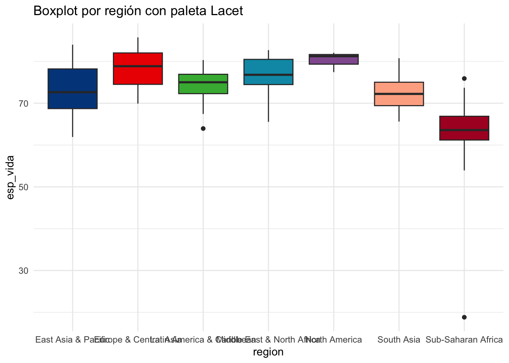
ggplot(df_22, aes(x = region, y = esp_vida, fill = region)) +
geom_boxplot() +
scale_fill_jama() +
theme_minimal() +
labs(title = "Boxplot por región con paleta Jama") +
theme(legend.position = "none")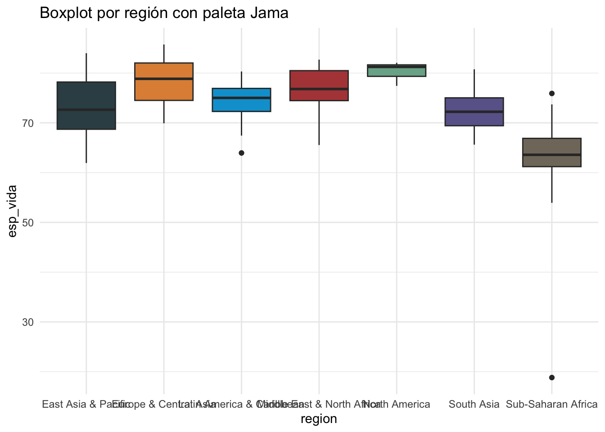
ggplot(df_22, aes(x = esp_vida, fill = region)) +
geom_histogram(binwidth = 3, color = "black") +
scale_fill_viridis_d(option = "C") +
facet_wrap(~ region) +
theme_minimal() +
labs(title = "Histograma por región con viridis",
x = ''
, y = '') +
theme(legend.position = 'none')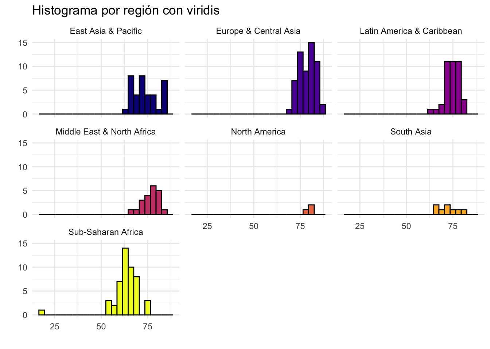
library(patchwork)p1 = ggplot(df_22, aes(x = esp_vida)) +
geom_density(fill = "darkgreen", alpha = 0.7) +
labs(title = "Distribución de la esperanza de vida") +
theme_minimal()p2 = ggplot(df_22, aes(x = region, y = esp_vida)) +
geom_boxplot(fill = "darkgreen", alpha = 0.7) +
labs(title = "Esperanza de vida por región", x = "Región", y = "Esperanza de vida") +
theme_minimal()p3 = df_22 %>%
filter(income != "Not classified") %>%
ggplot(aes(x = income, y = esp_vida)) +
geom_violin(fill = "darkgreen", alpha = 0.7) +
labs(title = "Esperanza de vida por nivel de ingreso", x = "Nivel de ingrsos") +
theme_minimal()(p1 | p2) / p3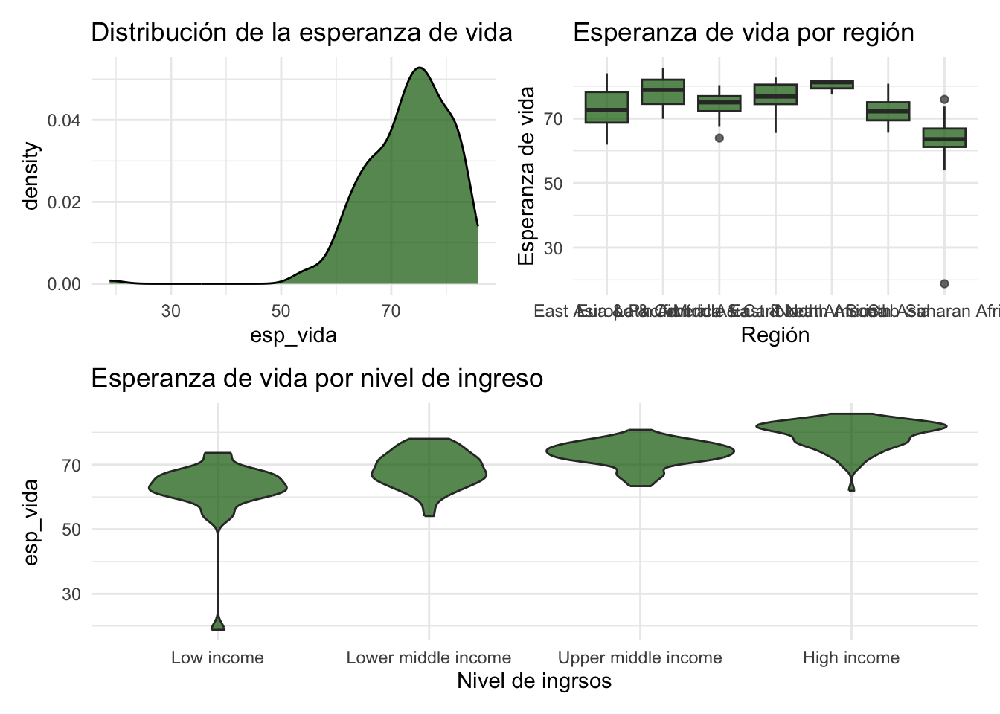
library(ggthemes)ggplot(df_22, aes(x = region, y = esp_vida, fill = region)) +
geom_boxplot() +
theme_economist() +
scale_fill_economist() +
labs(title = "Estilo The Economist")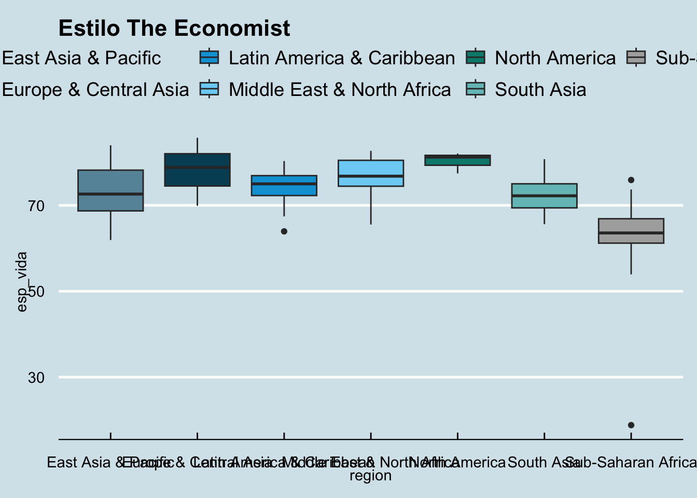
ggplot(df_22, aes(x = region, y = esp_vida, fill = region)) +
geom_boxplot() +
theme_economist() +
scale_fill_wsj() +
labs(title = "Estilo WSJ")Warning: This manual palette can handle a maximum of 6 values. You have
supplied 7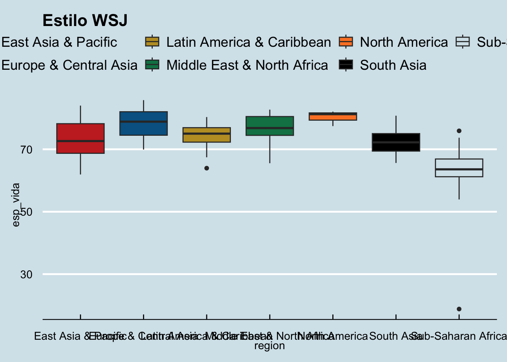
ggplot(df_22, aes(x = region, y = esp_vida, fill = region)) +
geom_boxplot() +
theme_economist() +
scale_fill_canva() +
labs(title = "Estilo Canva")Warning: This manual palette can handle a maximum of 4 values. You have
supplied 7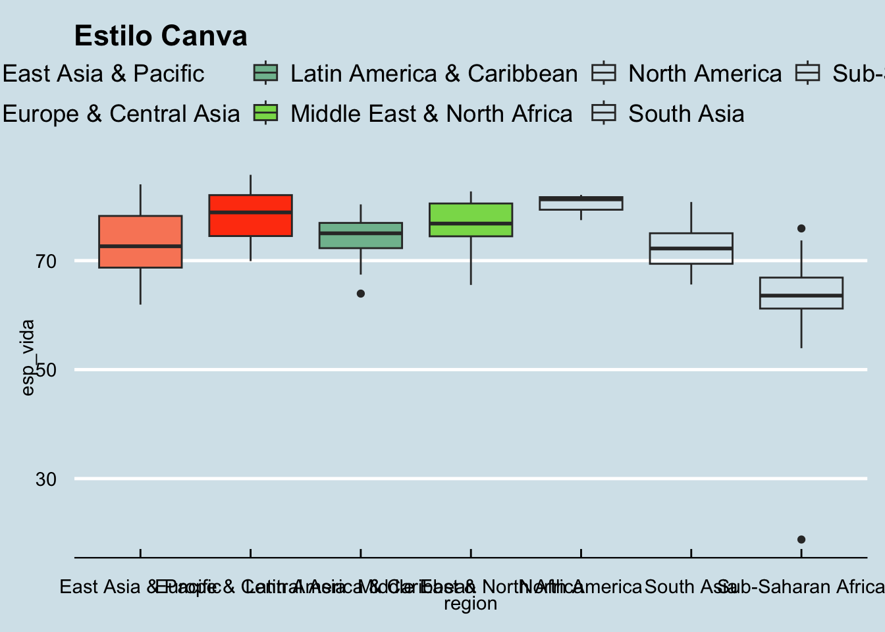
library(ggtext)
library(glue)colores = c(
"Sub-Saharan Africa" = "#E63946",
"Middle East & North Africa" = "#F28482",
"South Asia" = "#2A9D8F",
"East Asia & Pacific" = "#8AC926",
"Europe & Central Asia" = "#F4A261",
"Latin America & Caribbean" = "#457B9D",
"North America" = "#A17DB2"
)titulo = glue(
"Esperanza de vida por región:<br>",
"<span style='color:{colores['Sub-Saharan Africa']}'>África Subsahariana</span>, ",
"<span style='color:{colores['Middle East & North Africa']}'>MENA</span>, ",
"<span style='color:{colores['South Asia']}'>Asia del Sur</span>, ",
"<span style='color:{colores['East Asia & Pacific']}'>Asia Oriental y Pacífico</span>, ",
"<span style='color:{colores['Europe & Central Asia']}'>Europa y Asia Central</span>, ",
"<span style='color:{colores['Latin America & Caribbean']}'>América Latina</span>, ",
"<span style='color:{colores['North America']}'>Norteamérica</span>"
)df_22 = df_22 %>%
mutate(region = factor(region, levels = names(colores)))
# Luego graficamos
ggplot(df_22, aes(x = region, y = esp_vida, fill = region)) +
geom_boxplot() +
scale_fill_manual(values = colores) +
theme_minimal() +
theme(
plot.title = element_markdown(),
legend.position = "none"
) +
ggtitle(titulo)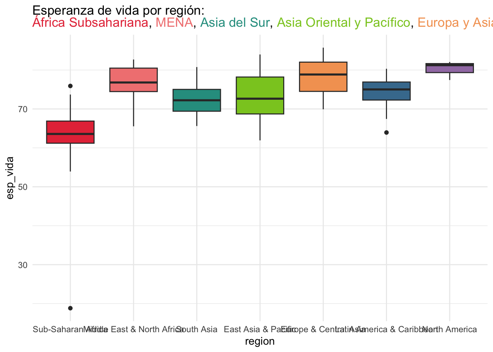
library(scales)ggplot(df_22, aes(x = pib_capita, y = esp_vida)) +
geom_point(color = "steelblue") +
scale_x_continuous(labels = dollar_format(prefix = "US$")) +
theme_minimal() +
labs(title = "Relación entre PIB per cápita y esperanza de vida",
x = ""
, y = "Esperanza de vida")Warning: Removed 7 rows containing missing values or values outside the scale range
(`geom_point()`).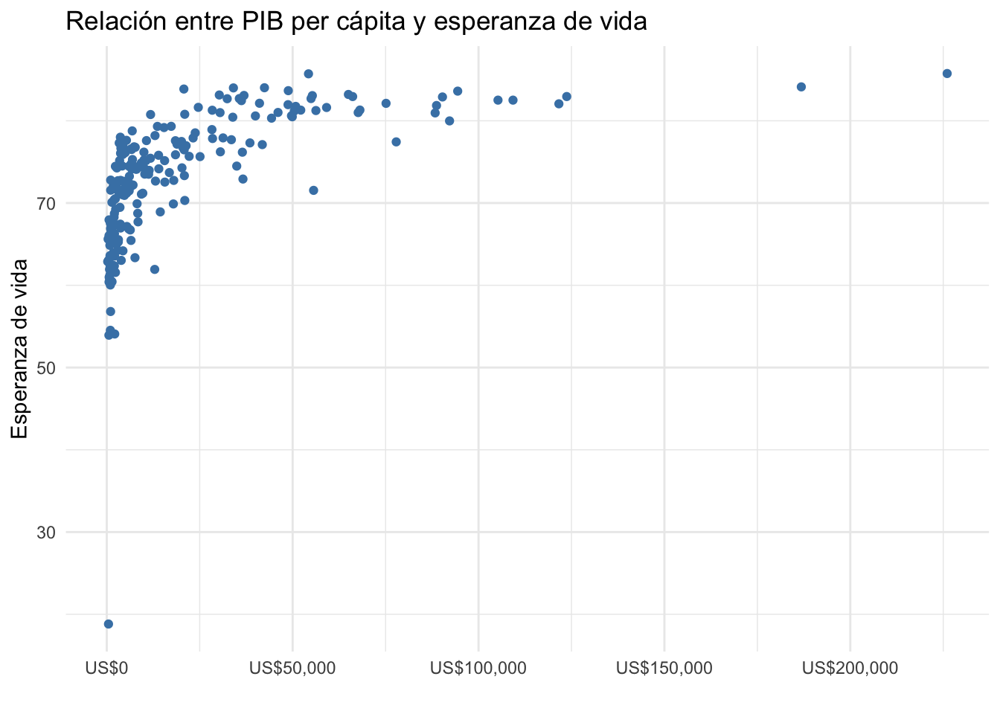
library(gghighlight)paises_vecinos = c("Peru", "Brasil", "Colombia",
"Ecuador", "Chile", "Argentina")df_22 %>%
ggplot(aes(x = log(pib_capita), y = esp_vida, label = country)) +
geom_point(color = "gray30", size = 2) +
gghighlight(country %in% paises_vecinos,
label_key = country,
unhighlighted_params = list(alpha = 0.4)) +
theme_minimal() +
labs(
title = "Países sudamericanos seleccionados resaltados",
subtitle = "Relación entre PBI per cápita (log) y esperanza de vida",
x = "PBI per cápita (log10)",
y = "Esperanza de vida"
)Warning: Removed 7 rows containing missing values or values outside the scale range
(`geom_point()`).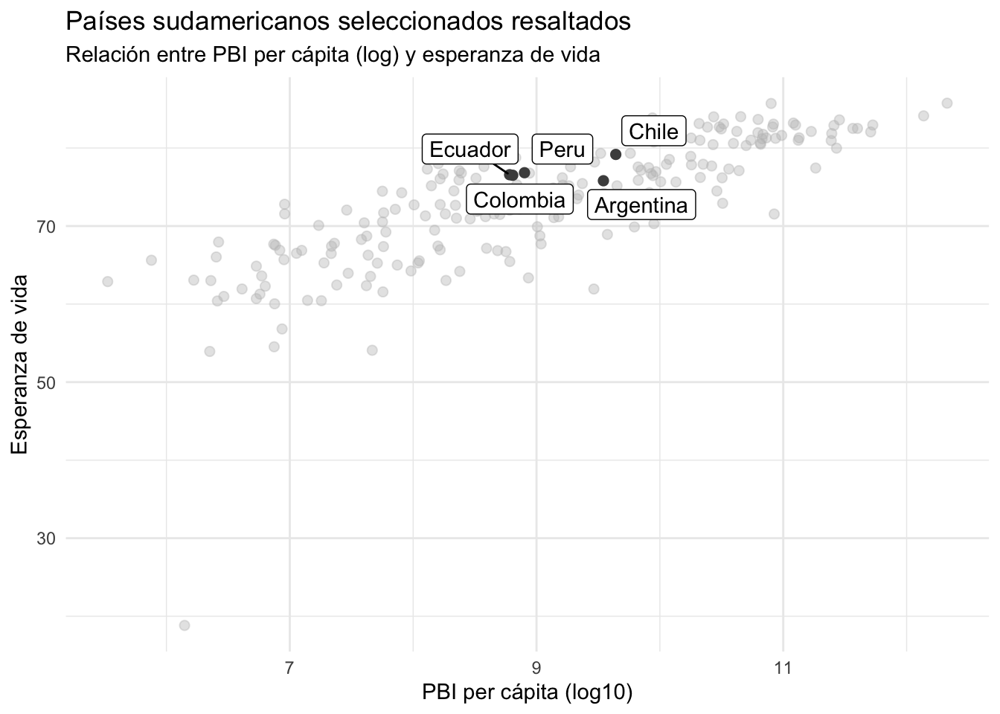
ggsave("grafico.png", plot = p1,
width = 8, height = 6, dpi = 300)